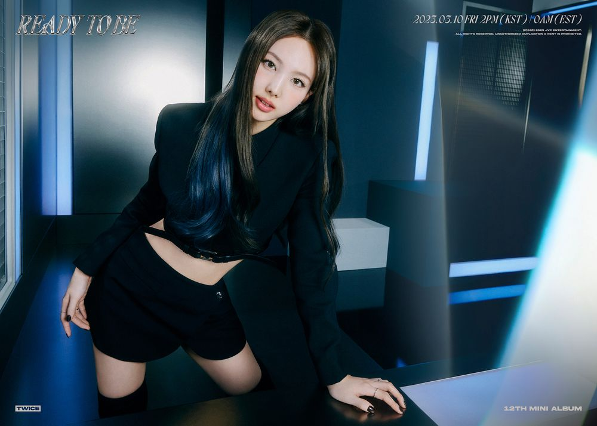
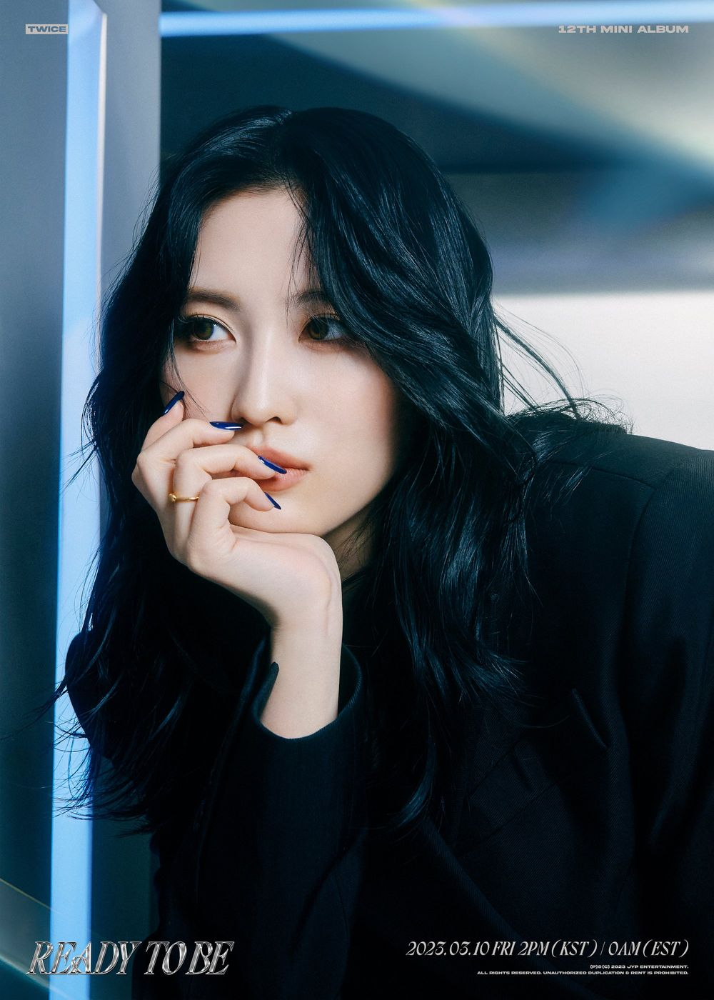
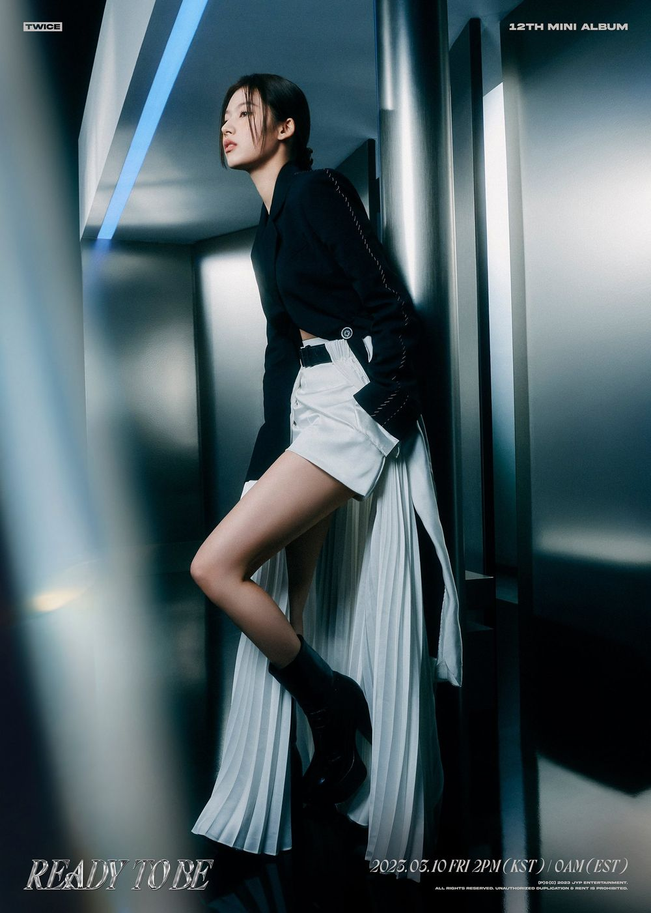

Im Na-yeon, mais conhecida apenas como Nayeon, é uma cantora, dançarina e compositora sul-coreana. Ela é mais conhecida por ser integrante do grupo feminino sul-coreano TWICE, tendo estreado nele em 2015 através da JYP Entertainment. Nayeon fez sua estreia solo com o álbum Im Nayeon em junho de 2022.
Nascimento: 22 de setembro de 1995, Sangil-dong, Seul, Coreia do Sul
Altura: 1,63 m
Yoo Jeong-yeon, mais conhecida na carreira musical apenas como Jeongyeon, é uma cantora, compositora e apresentadora sul-coreana. Realizou sua estreia no cenário musical em 2015 no grupo feminino TWICE.
Nascimento: 1 de novembro de 1996, Suwon, Coreia do Sul
Altura: 1,67 m
Momo Hirai é uma cantora, compositora e dançarina japonesa. Ela é mais conhecida por ser integrante do grupo feminino sul-coreano Twice.
Nascimento: 9 de novembro de 1996, Kyotanabe, Quioto, Japão
Altura: 1,62 m
Sana Minatozaki é uma cantora e dançarina japonesa. Ela é mais conhecida por ser integrante do grupo feminino sul-coreano Twice.
Nascimento: 29 de dezembro de 1996, Tennōji-ku, Osaka, Japão
Altura: 1,64 m
Park Ji-hyo, conhecida apenas como Jihyo, é uma cantora, compositora e dançarina sul-coreana. Ela é mais conhecida por ser integrante, Líder e Vocalista Principal do grupo feminino sul-coreano Twice.
Nascimento: 1 de fevereiro de 1997, Guri, Coreia do Sul
Altura: 1,60 m
Mina Myōi, conhecida apenas como Mina, é uma cantora e dançarina japonesa-americana. Ela é mais conhecida por ser integrante do grupo feminino sul-coreano Twice.
Nascimento: 24 de março de 1997, San Antonio, Texas, EUA
Altura: 1,63 m
Kim Da-hyun, mais conhecida na carreira musical apenas como Dahyun, é uma rapper, cantora, dançarina, modelo, compositora e apresentadora sul-coreana. Realizou sua estreia no cenário musical em 2015 no grupo feminino Twice.
Nascimento: 28 de maio de 1998, Seongnam, Coreia do Sul
Altura: 1,61 m
Son Chaeyoung, conhecida apenas como Chaeyoung, é uma cantora, rapper, compositora, produtora e dançarina sul-coreana. Ela é mais conhecida por ser integrante do grupo feminino sul-coreano Twice.
Nascimento: 23 de abril de 1999, Dunchon-dong, Seul, Coreia do Sul
Altura: 1,59 m
Chou Tzu-yu, mais conhecida apenas como Tzuyu, é uma cantora, modelo, e compositora taiwanesa. Ela é mais conhecida por ser integrante do grupo feminino sul-coreano Twice.
Nascimento: 4 de junho de 1999, East District, Taiwan
Altura: 1,72 m